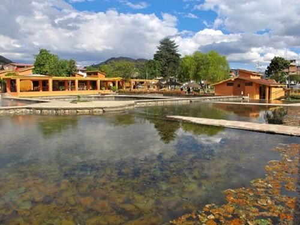
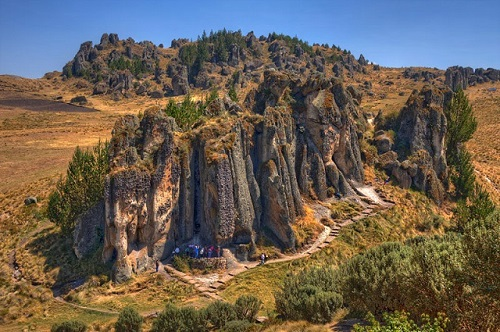
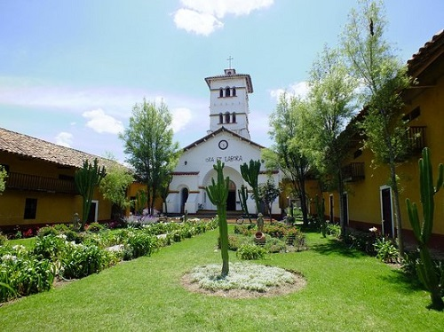
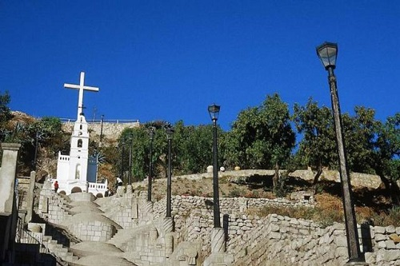

| Sitio Turistico | Descripcion |
|  |
El distrito de Baños del Inca es uno de los doce que conforman la provincia de Cajamarca ubicada en el departamento de Cajamarca en el Norte del Perú. El distrito es conocido por sus aguas termales. Se encuentra a 6 km de la ciudad de Cajamarca. Desde el punto de vista jerárquico de la Iglesia católica forma parte de la Diócesis de Cajamarca la cual a su vez, pertenece a la Arquidiócesis de Trujillo. |
|  |
Cumbemayo es conocido como yacimiento arqueológico, en el cual destacan las ruinas de un acueducto pre-incaico que posee unos 8 km de longitud. El acueducto juntaba agua de precipitaciones y la transportaba hacia la zona del océano Pacífico. Se cree que puede haber sido construido hacia el 1500 a. C. y antiguamente se pensaba que era la estructura existente más antigua de America del Sur. El nombre Cumbemayo puede tener sus raíces en la frase quechua, kumpi mayu, que significa “canal de agua bien construido”, o humpi mayo, que significa “río angosto.” |
|  |
Hacienda La Collpa Es un agradable lugar de la campiña cajamarquina dedicada a la crianza de ganado vacuno lechero. Lo particular de esta hacienda es el popular "Llamado de las vacas", quienes acuden disciplinadamente al lugar que les corresponde para el ordeño. Además del establo, se puede visitar la Casa Hacienda, la laguna artificial, la capilla La Virgen del Carmen y el mirador desde donde se puede observar el verde y colorido horizonte serrano. |
|  |
El Mirador de Santa Apolonia, está ubicado en el cerro Santa Apolonia donde se puede observar la preciosa vista de la ciudad y todo su esplendor. En el mirador destacan bellas escalinatas y jardines y una capilla de Santa Apolonia que es celebrada el día de la Virgen de Fátima(13 de mayo). En sus linderos se pueden apreciar aún vestigios de edificaciones pre-hispánicas, entre ellas la famosa “Silla del Inca” que está formada por dos bloques de piedra que afloran del mismo cerro, que han sido tallados para darle su forma actual. |